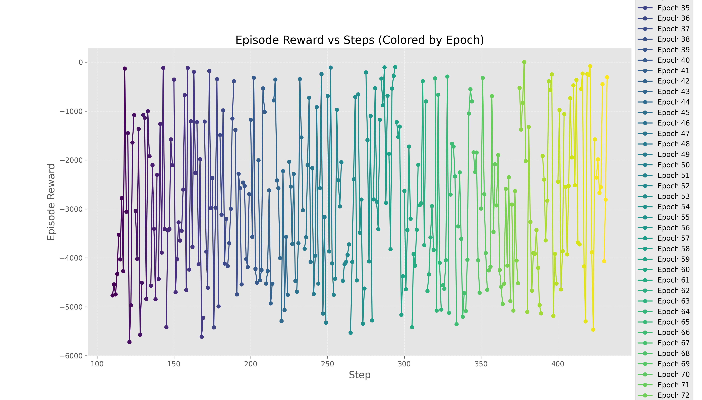
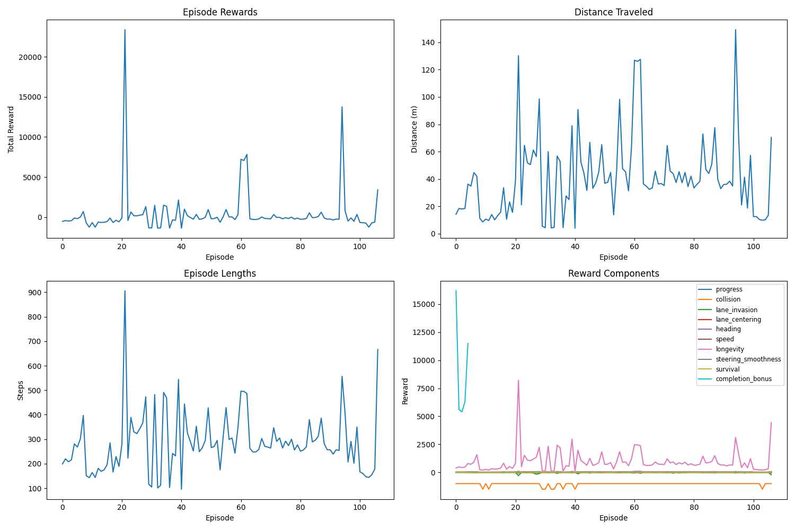
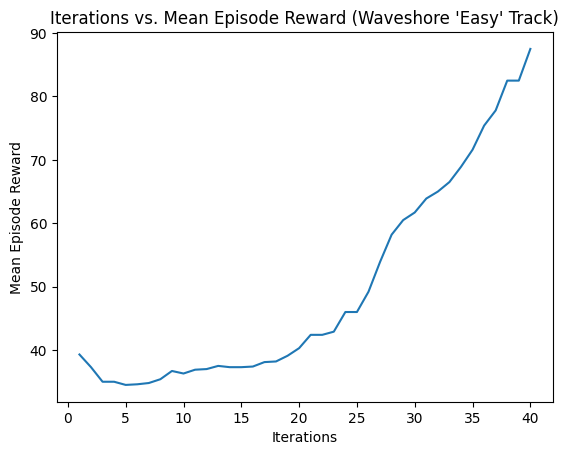
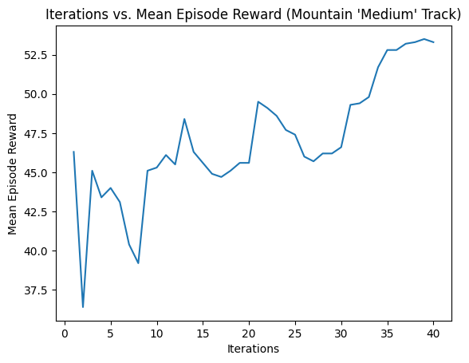
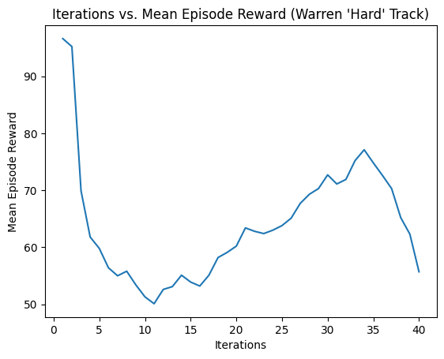

Abstract
The goal of this project is to train a Reinforcement Learning (RL) Classifier on autonomous vehicles. We plan to use both CARLA and DonkeyCar Simulator to navigate our vehicle. CARLA will provide a complex urban driving environment, while the DonkeyCar simulator will be used for a simpler track-based navigation on it's “Warren Field” circuit. We plan to solely rely on a Lidar sensor for data collection because of its robustness in capturing depth information and obstacle detection regardless of lighting conditions, an advantage over typical computer vision based data collection. We implement two deep RL algorithms: Actor-Critic and Proximal Policy Optimization (PPO), both designed for continuous action spaces since algorithms like simple a simple Q learning to are ineffective for problems in continious action spaces. We will use the gathered data to train agents to take optimal actions such as steering, acceleration, and braking based on the cars current position relative to the world. Performance will be evaluated using key metrics such as cumulative reward, lap completion time, and distance travelled. By comparing these metrics across different models and training scenarios, we aim to determine which RL method provides the most robust and efficient control for autonomous driving in simulated environments.
Background
Autonomous driving has rapidly advanced due to improvements in computing power and machine learning, particularly reinforcement learning (RL), which enables autonomous agents to learn optimal control strategies through trial and error. Unlike traditional rule-based or supervised learning methods, RL-based approaches can dynamically adapt to new environments and uncertain conditions, making them well-suited for self-driving applications [1]. However, a significant challenge in RL-driven autonomous navigation is the simulation-to-reality gap, where models trained in virtual environments struggle to perform reliably in real-world settings due to differences in sensor noise, road textures, and unexpected obstacles [2]. Research on domain adaptation and transfer learning continues to address this issue by fine-tuning RL policies with real-world data [3].
Simulation environments play a crucial role in training RL-based autonomous driving models. DonkeyCar Simulator (DonkeySim) provides a lightweight platform for testing self-driving models on controlled tracks and is widely used due to its accessibility and ease of experimentation [4]. The simulator provides key sensory inputs such as camera feeds, speed readings, and steering angles, enabling the development of reinforcement learning pipelines without requiring physical hardware. For more complex urban driving scenarios, CARLA offers a high-fidelity simulation environment with dynamic traffic, weather conditions, and diverse road layouts [5]. CARLA allows for more extensive testing of RL models in realistic settings, making it a crucial tool for benchmarking autonomous navigation systems.
Recent advancements in policy optimization techniques have improved training stability and efficiency in reinforcement learning for autonomous driving. Proximal Policy Optimization (PPO) has emerged as a preferred method for continuous control tasks due to its ability to balance exploration and exploitation while preventing overly large policy updates [6]. Additionally, Actor-Critic methods provide an effective framework for reinforcement learning by combining value-based and policy-based learning, resulting in more stable and informed decision-making in autonomous navigation tasks [7].
Self-driving technology has the potential to improve road safety, efficiency, and accessibility, but achieving reliable autonomy remains a challenge. Reinforcement learning-based methods, combined with improvements in simulation environments, optimized reward functions, and safer real-world deployment strategies, can contribute to the refinement of autonomous navigation systems. Continued research on policy optimization, explainable AI, and real-world generalization will be essential for making self-driving technology both practical and ethically responsible.
Why is this Important?
Autonomous driving stands to improve road safety, increase mobility,
and reduce congestion. However, it also introduces unique challenges in perception,
planning, and control. Studying reinforcement learning in this domain is crucial for
advancing algorithms that can handle high-dimensional state spaces and continuous action
controls, ultimately bringing us closer to reliable self-driving cars.
Problem Statement
Autonomous navigation for industrial and factory environments requires precise and efficient vehicle control to ensure safe and timely transportation of goods. Traditional rule-based and vision-based approaches struggle with real-time adaptability and robustness in dynamic settings where numerous unexpected obstacles may arrise due to minor mishaps. Through our project, we aim to develop a deep reinforcement learning (RL) model that enables autonomous vehicles to navigate factory environments using only LiDAR data as input. By leveraging reinforcement learning techniques, particularly Proximal Policy Optimization (PPO) and Actor-Critic methods, we aim to train a model capable of handling continuous action spaces while minimizing computational complexity. Our goal is to create an efficient, collision-free, and fast driving policy that enhances safety, accuracy, and cost-effectiveness in automated logistics and manufacturing operations.
Data
For this reinforcement learning project, we generated training data through interactions with the CARLA simulator, a high-fidelity environment designed for autonomous vehicle research. Unlike traditional datasets, our approach relies on real-time sensory inputs from the simulator, with LiDAR data serving as the cornerstone of our state representation.
LIDAR Data Collection for CARLA Implementation
-
LiDAR Sensor: We attached a LiDAR sensor to the vehicle in CARLA, configured
with a 50-meter range to capture point cloud data representing distances to surrounding
objects.
-
By using LIDAR data instead of camera inputs, we avoid the computational overhead of
convolutional neural networks, making our model efficient for real-time industrial
applications while maintaining robust environmental perception.
-
Data Processing: The raw LiDAR point cloud is processed to create a compact
yet informative state:
-
The point cloud is divided into 8 sectors, each spanning 45 degrees around the
vehicle (from -180° to 180°).
-
For each sector, we compute the minimum and maximum distances to obstacles,
yielding 16 features (8 minimums and 8 maximums).
If no points are detected in a sector, a default distance of 50 meters is used.
-
This approach reduces computational complexity while preserving spatial
awareness, enabling the agent to detect obstacles in all directions.
-
State Augmentation: The LiDAR-derived features are augmented with two
additional variables:
-
Distance to the next waypoint, calculated as the Euclidean distance from the
vehicle's current position to the target waypoint's location.
-
Angular difference between the vehicle's current heading (yaw) and the direction to
the next waypoint, normalized to [-180°, 180°].
-
Implementation Details: In our
CarlaEnvWrapper class, the _get_state method
processes LIDAR data by converting raw points into polar coordinates (angles and
distances), binning them into sectors, and computing min/max distances.
The state is updated synchronously with each simulation tick to ensure consistency.
DonkeySim Implementation
-
LiDAR-Based State Representation: Instead of relying on the default camera feed, we integrate a virtual LiDAR sensor for spatial awareness.
-
The LiDAR readings are discretized into three key sectors: left, center, and right,
providing depth perception.
-
Additional State Variables
- Speed of the vehicle
- Distance to track boundaries (to prevent off-track behavior)
- Angular deviation from the optimal racing line (helps maintain smooth turns)
-
Experience Collection & Training Data
- Each interaction produces an experience tuple: (state, action, reward, next_state).
- Actions taken: steering, acceleration, and braking.
-
Rewards are assigned based on:
- Staying on track
- Maintaining an optimal speed
- Avoiding excessive braking or sharp turns
-
Enhancing Generalization
- Experimenting with different reward functions to balance exploration and exploitation.
- Testing across multiple track variations for robustness.
- Adjusting penalties for off-track behavior and excessive steering to promote smooth
driving.
-
Efficient RL Training Pipeline
- The collected data is used to iteratively train the PPO model.
- By refining reward structures and state representations, we optimize the agent's
learning process for autonomous driving in DonkeySim.
Proposed Solution
-
State Representation
-
The vehicle relies solely on LiDAR data, processed into an 18-dimensional state vector
(16 LIDAR features + 2 waypoint features), as detailed in the Data section.
-
This design ensures a low computational footprint and real-time decision-making
capability.
-
Action Space
-
The action space is continuous, with two dimensions: throttle/brake ([-1, 1], where
positive values are throttle and negative are brake) and steering ([-1, 1]).
-
This allows the agent to dynamically adjust speed and direction, learning the interplay
between velocity and turning for smooth navigation.
-
Reinforcement Learning Approach
-
We implemented Proximal Policy Optimization (PPO) using PyTorch Lightning, training
the agent in the CARLA simulator.
-
We used Proximal Policy Optimization (PPO) from stable-baselines3, training
the agent in the DonkeySim simulator.
-
PPO balances exploration and exploitation, making it ideal for our continuous control
task.
-
Neural Network Architecture
The PPO agent relies on two distinct neural networks: the actor, which determines the policy
(action selection), and the critic, which estimates the value function.
These networks are
designed as multi-layer perceptrons (MLPs) with the following structures:
-
Actor Network:
-
Structure: A four-layer MLP:
-
Input Layer: 18 neurons, corresponding to the state dimension (e.g., sensor
data, velocity, etc.).
-
Hidden Layers: Three layers with 256, 256, and 128 neurons, respectively,
each followed by Tanh activation functions.
-
Output Layer: 4 neurons, representing the mean and log standard deviation
(log_std) for two continuous actions: throttle and steering (2 neurons per
action).
-
Output Processing:
-
Throttle Mean: Passed through a sigmoid function to produce values in the
range [0,1], biasing the agent toward forward movement.
-
Steering Mean: Passed through a tanh function to produce values in the range
[-1,1], enabling smooth left and right turns.
-
Standard Deviation: The log_std outputs are exponentiated, clamped, and
constrained to a minimum value to ensure sufficient exploration during training.
-
Initialization: Weights are initialized using Xavier uniform initialization, and biases
are set to zero.
-
Purpose: The Tanh activations help stabilize policy updates, while the split output
design accommodates the continuous action space required for driving control.
-
Critic Network:
-
Structure: A four-layer MLP:
-
Input Layer: 18 neurons, matching the state dimension.
-
Hidden Layers: Three layers with 256, 256, and 128 neurons, respectively,
each followed by ReLU activation functions.
-
Output Layer: 1 neuron, providing the value estimate for the given state.
-
Initialization: Weights are initialized using Xavier uniform initialization, and biases
are set to zero.
-
Purpose: The ReLU activations support effective value approximation, enabling the
critic to provide stable and accurate estimates of the state's expected return.
-
Reward Function Design
The reward function evolved iteratively to guide the agent toward safe, efficient, and route-
following behavior:
-
Initial Reward Function:
-
Collision Avoidance: A penalty of -50 was applied for collisions to prioritize
safety.
-
Speed Maintenance: Reward was proportional to distance traveled per step,
encouraging forward movement.
-
This basic design promoted movement while avoiding obstacles but lacked route
guidance.
-
Intermediate Reward Function:
-
Lane Discipline: Added a -1 penalty for lane invasions to keep the vehicle within
track boundaries.
-
Speed Regulation: Introduced a target speed of 30 km/h, with a penalty (-0.1 *
speed - target ) for deviations, and an additional -1 penalty for speeds below 5
km/h to prevent stalling.
-
Steering Smoothness: Penalized large steering actions (-0.5 * |steering|) when
speed was below 5 km/h to reduce erratic behavior at low speeds.
-
This improved track adherence and consistency but didn't ensure progress along a
specific path.
-
Final Reward Function:
-
Waypoint Following: Added a reward based on proximity to the next waypoint
(max(0,5-distance/10)), encouraging route adherence.
-
Heading Alignment: Included a bonus (max(0,1-|angle_diff|/180)) for aligning the
vehicle's heading with the waypoint direction, promoting smoother turns.
-
Progress Reward: Retained distance traveled as a base reward, augmented by
waypoint incentives.
-
Safety Penalties: Kept collision (-50) and lane invasion (-1) penalties.
-
Stuck Detection: Penalized (-2) if the vehicle's position varied by less than 1 meter
over 20 steps, preventing circular or stagnant behavior.
-
Implemented in
CarlaEnvWrapper.step, this final version balances safety,
efficiency, and navigation.
-
Deployment and Applications
Setup deployment details
A full list complete setup details can be found in the code repo's README.
Essentially the
following items must be setup:
-
Carla 0.9.15 must be setup on a gpu based machine, as well as the python api for the
same version for full compatibility
- Python must be setup with respective packages
-
The car is setup in the default map with the default settings.
It is a real world simulation,
but with no NPCs to reduce complexity given the projects scale.
Potential Future applications
-
The trained PPO model can optimize logistics in factory settings, enabling autonomous
vehicles to transport goods safely and efficiently along predefined routes.
- This approach reduces costs and enhances precision in industrial automation.
Evaluation Metrics
-
Cumulative Reward
-
Definition: The total reward accumulated over an episode, calculated based on the
reward function defined in your project.
-
Significance: This metric reflects the overall performance of the agent.
Higher
cumulative rewards indicate better navigation, fewer collisions, and more effective
adherence to the intended route. It serves as a primary indicator of policy improvement
during training.
-
Collision Rate
-
Definition: The frequency of collisions with obstacles or boundaries during an episode.
-
Significance: A lower collision rate is desirable, as it demonstrates the agent's ability to
navigate safely and avoid hazards. This metric is critical for evaluating the safety
performance of the driving policy.
-
Distance Traveled
-
Definition: The total distance covered by the vehicle over the course of an episode.
-
Significance: When paired with a low collision rate, a higher distance traveled suggests
efficient and effective navigation. This metric highlights the agent's progress and ability
to follow the desired path.
Results
Reference the videos here:
https://drive.google.com/drive/folders/1K7cDpq456Woh-fQq7A6EAID3Nz-YboTQ?usp=sharing
The primary objective of this study is to demonstrate that a well-designed reward function is
essential for effective reinforcement learning (RL)-based autonomous navigation. Additional
considerations include the utility of LiDAR data for state representation and the
appropriateness of PPO for continuous control tasks. We evaluate the PPO agent's
performance using two distinct reward models: a simpler reward-based model and an older,
more complicated reward-based model. The analysis centers on key performance metrics,
including episode rewards, distance traveled, episode lengths, and reward components,
derived from the training progress at epoch 50 for the older model and the rewards vs.
steps relationship for the simpler model.
Subsection 1: Performance of the Simpler Reward-Based Model

The performance of the PPO agent with the simpler reward-based model is illustrated in a
scatter plot titled "Episode Reward vs Steps (Colored by Epoch)," which tracks episode
rewards against the number of steps across epochs 35 to 72.
-
Early Epochs (35-40):
-
During the initial training phase (epochs 35-40), episode rewards are consistently
low, ranging between -6000 and -4000. At around 100 steps, rewards frequently
reach-6000, reflecting poor performance early in training. As steps increase to
200, rewards remain predominantly negative, with significant variability-some
points improve to -1000, while others drop back to -5000 or lower.
-
Mid Epochs (41-55):
-
In the mid-training phase (epochs 41-55), the agent's performance begins to
improve. Between 200 and 300 steps, episode rewards cluster between -4000 and
-2000, with fewer points falling below -5000. Variability persists, with some
episodes achieving rewards as high as -1000, while others remain around -4000,
indicating inconsistent progress.
-
Later Epochs (56-72):
-
By the later epochs (56-72), further improvement is evident. Between 300 and 450
steps, rewards concentrate between -3000 and -1000, with several points nearing
0 (e.g., around -500 at 400-450 steps). However, some outliers still drop to -4000,
suggesting that the agent has not yet achieved fully stable performance.
-
Key Observation: The scatter plot reveals a clear upward trend in episode rewards as both
steps and epochs increase, demonstrating that the PPO agent is learning and refining its
navigation abilities under the simpler reward model. Nevertheless, the persistent variability
in rewards indicates that additional training or model refinement may be required to achieve
consistent and optimal performance.
Subsection 2: Performance of the Older, More Complicated Reward-Based
Model (Training Progress at Epoch 50)

The older, more complicated reward-based model's performance is assessed using four
charts depicting training progress over 100 epochs. Here, we focus specifically on the
agent's behavior at epoch 50.
-
Episode Rewards:
-
At epoch 50, the total reward is approximately 2,000. This follows a peak of around
10,000 at episode 40 and a subsequent decline. Across the 100 epochs, rewards
fluctuate widely, with notable spikes at episode 10 (around 20,000), episode 60
(around 15,000), and episode 80 (around 5,000), but they generally hover around
2,000 outside these peaks.
-
Distance Traveled:
-
The distance traveled at epoch 50 reaches approximately 120 meters, a significant
peak compared to surrounding episodes, which typically range between 20 and 40
meters. Other prominent peaks include episode 10 (120 meters), episode 30 (100
meters), episode 70 (80 meters), and episode 90 (140 meters).
-
Episode Lengths:
-
At epoch 50, the episode length is around 300 steps, relatively modest compared
to earlier peaks like episode 10 (900 steps). Episode lengths generally fluctuate
between 200 and 400 steps, with occasional spikes, such as 600 steps at episode
60 and 700 steps at episode 80.
-
Reward Components:
-
The total reward at epoch 50 is dominated by the "progress" component
(approximately 2,000), with a minor contribution from the "longevity" component
(around 500). Other components-collision, lane invasion, lane centering, heading,
speed, steering smoothness, survival bonus, and completion bonus-remain near
zero, indicating negligible influence on the total reward.
-
Key Observation: At epoch 50, the older model yields a total reward of 2,000, with a
notable distance traveled of 120 meters. The overwhelming contribution of the "progress"
reward component suggests that the agent is primarily incentivized to move forward, while
safety and efficiency metrics (e.g., collision avoidance, lane discipline) play a minimal role.
This imbalance may result in suboptimal navigation behavior, as the agent prioritizes
distance over other critical objectives.
Subsection 3: Comparative Analysis and Key Insights
-
Simpler Reward Model:
-
The simpler model exhibits a steady increase in episode rewards, progressing from
-6000 to near 0 across epochs 35 to 72. While this indicates effective learning, the
high variability in rewards suggests that the agent has not yet converged to a
stable, optimal policy.
-
Without detailed reward component data, specific behavioral improvements (e.g.,
collision avoidance, lane adherence) are difficult to assess, but the overall trend
reflects enhanced navigation capability.
-
Older, More Complicated Reward Model:
-
The older model displays significant reward volatility, with occasional high-reward
episodes (e.g., 20,000 at episode 10) followed by drops to lower values (e.g., 2,000
at epoch 50).Distance traveled and episode lengths also fluctuate widely.
-
The reward components highlight a heavy reliance on "progress," with minimal
contributions from safety or efficiency metrics. This skewed reward structure likely
undermines consistent performance by favoring forward movement over balanced
navigation.
-
Insight: The simpler reward model, despite its simplicity, shows more consistent
improvement in rewards over time, suggesting that a straightforward, well-tuned reward
function may outperform a complex one in this context. Conversely, the older model's focus
on progress at the expense of other behaviors leads to erratic outcomes, underscoring the
need for a balanced reward design.
Subsection 4: Impact of Reward Function on Agent Behavior
-
Simpler Reward Model:
The steady reward improvement implies that the agent is learning to balance basic
navigation tasks, such as advancing while avoiding obstacles. However, the lack of
reward component breakdown limits insight into specific behavioral advancements.
-
Older Reward Model:
The dominance of the "progress" component likely drives the agent to prioritize
distance covered over safety or precision. The high distance traveled at epoch 50
(120 meters) despite a modest reward (2,000) suggests risky actions, such as
neglecting collisions or lane discipline, which contribute little to the reward.
-
Observation: The older model's reward structure may encourage unsafe navigation by
underweighting critical safety and efficiency metrics. This highlights the importance of a
reward function that integrates multiple objectives—progress, safety, and adherence—to
foster robust autonomous navigation.
Subsection 5: Moving to a Simpler Domain - DonkeySim
Why DonkeySim?: While we were satisfied with our results from our CARLA
simulations, we also wanted to test out another autonomous vehicle simulator:
DonkeySim. Our goal was to investigate if we would end up with similar results as above
if we used a similar model structure in a simpler DonkeySim domain instead of a highly
complex and realistic CARLA domain.
Procedure & Setup: To get a good understanding of the relationship between map
complexity and model performance, we decided to test a singular model -
stable_baselines3's PPO with CNN-policy - across three different DonkeySim Maps:
Waveshore, Warren Track, & Mountain Track. Waveshore is the smallest and simplest
map, being a simple loop with minimal obstacles or changes in elevation. We classified
Mountain Track as a "Medium" map, since there were minimal obstacles. However, as
we would find out later, this map was more complicated than hypothesized becuase of
the changes in elevation adding a hurdle for the car to have to overcome. Lastly, the
UCSD-based Warren track, which was the most difficult map due to its abundance of
obstacles, twisting-and-turning map, and small width of the track itself.
Results:

-
Waveshore ("Easy") - In this simple looped track, our agent was able to converge and
(mostly) adhere to the path that it was supposed to follow after a few minutes of
training! This was a landmark discovery for us, since it showed that PPO does have
opporunity for success, however it may just be limited to small, toy enviornments with
limited distractions. In either case, our training data showed an ideal trajectory, with
episodes mean reward steadily increasing from the beginning to the end of the training
process, where you can see in our video that the DonkeyCar follows the trajectory of
the track, although it isn't perfect and is still susceptible to going off track at times.
Start of Training
End of Training

-
Mountain Track ("Medium") - The Mountain Track was next in our training process,
and over the course of the training period the car seemed to be making significant
strides in terms of moving ahead in the map. However, this progress wasn't perfect and
for every good run the car made, it followed it up with a few "dumb" runs where it
decided to spin in circles until it crashed or got stuck on the elevation differences, and
you can clearly see these fluctuations in the above graph. An unexpected problem was
the fact that the car struggled with the leveling of the track, since the mountainous
track wasn't smooth and had ups and downs which served as obstacles the car had to
navigate. While the car wasn't able to complete the track in the allotted training period,
it was able to make significant progress. As we will discuss in the limitations section in
more detail, we couldn't simple increase time steps to wait for convergence as
DonkeySim's simulator began crashing.
Start of Training
End of Training

-
Warren Track ("Hard") - The most difficult of the three tracks, our agent was
unable to make any progress in this map. It would consistently crash into the
barriers on the side of the track, and when it did manage to make it past the first
turn it would then crash into the next wall. This was a consistent pattern that we
saw in our training data, and the data reflected this as well. You can see that the
mean episode reward stayed consistently low throughout the entire training
period, and in our video you can see that the car doesn't even make it past the first
turn. This was a big learning experience for us, as it showed that even though PPO
is a very powerful RL algorithm, it is still susceptible to poor performance in
complex environments.
Start of Training
End of Training
Discussion
The results from the previous section highlights the importance of the complexity of
the environment in PPO's overall performance. As we saw in the previous section,
PPO was able to perform well in the simplest map, Waveshore, but struggled in the
more complex maps, Mountain Track and Warren Track. This suggests that PPO may be
better suited for simpler environments, or that more training is needed for PPO to
perform well in complex environments.
The results from our CARLA experiments also highlights the importance of the reward
function in PPO's overall performance. As we saw in the previous section, PPO was
able to perform better with the simpler reward function than the more complex reward
function. This suggests that a simpler reward function may be better suited for PPO,
or that more tuning is needed for a complex reward function to perform well with PPO.
Limitations
During our experiments, we encountered several limitations that affected our
methodology and outcomes.
-
Computational Resources: Training reinforcement learning models, especially in
complex environments like CARLA, requires substantial computational power.
Limited access to high-performance computing resources restricted the scale and
duration of our experiments.
-
Toy Environment: While CARLA provides a high-fidelity simulation environment,
it is still an approximation of real-world conditions. Discrepancies between the
simulation and the real world may limit the transferability of our results.
-
Model Complexity: The complexity of the models and algorithms used in
reinforcement learning can make it challenging to interpret and optimize their
performance. We relied on established architectures and methodologies, but there
is always room for further refinement and innovation.
-
Hyperparameter Tuning: Reinforcement learning models have many hyperparameters
that can significantly impact their performance. Tuning these hyperparameters
effectively requires extensive experimentation and expertise. Due to resource
constraints, we were not able to explore the full range of hyperparameter
combinations.
-
DonkeySim Limitations: As briefly discussed in the Results section, we ran into
some limitations when it came to using DonkeySim. The simulator would often crash
and we would have to restart it, which prevented us from running our experiments
for longer periods of time. This was a significant limitation, as it prevented us
from being able to fully explore the capabilities of PPO in DonkeySim.
Future Work
To build upon the findings of this project, several avenues for future work can be
explored:
-
Enhanced Reward Shaping: Investigate more sophisticated reward shaping techniques
to guide the agent's learning process more effectively. This could involve designing
reward functions that incentivize specific behaviors, such as smooth driving, energy
efficiency, or passenger comfort.
-
Curriculum Learning: Implement a curriculum learning approach where the agent is
gradually exposed to more complex environments and tasks. This could help the agent
learn more robust and generalizable policies.
-
Multi-Agent Reinforcement Learning: Extend the project to multi-agent scenarios
where multiple autonomous vehicles interact with each other. This would allow for
the exploration of cooperative and competitive behaviors in autonomous driving.
-
Real-World Validation: Transfer the trained models to real-world autonomous
vehicles and evaluate their performance in actual driving conditions. This would
require addressing challenges such as sensor noise, environmental variability, and
safety considerations.
-
Advanced Model Architectures: Explore the use of more advanced model architectures,
such as attention mechanisms or graph neural networks, to improve the agent's
ability to perceive and reason about its environment.
-
DonkeySim: Given the limitations we faced when using DonkeySim, future work
could focus on addressing these limitations. This could involve finding ways to
prevent the simulator from crashing, or finding alternative simulators that are
more stable.
Ethics & Privacy
The development and deployment of autonomous vehicles raise several ethical and
privacy considerations that must be addressed:
-
Safety: Ensuring the safety of autonomous vehicles is paramount. It is crucial to
thoroughly test and validate these systems to minimize the risk of accidents and
injuries.
-
Bias: Reinforcement learning models can inadvertently learn and perpetuate biases
present in the training data. It is important to carefully curate training datasets
and employ techniques to mitigate bias in the models.
-
Privacy: Autonomous vehicles collect and process vast amounts of data about their
surroundings and occupants. It is essential to protect the privacy of individuals by
implementing robust data security measures and adhering to relevant privacy
regulations.
-
Accountability: Determining liability in the event of an accident involving an
autonomous vehicle is a complex legal and ethical challenge. Clear guidelines and
regulations are needed to establish accountability and ensure fair compensation
for victims.
-
Transparency: It is important to make the decision-making processes of
autonomous vehicles transparent and understandable to the public. This can help
build trust and acceptance of these technologies.
Conclusion
This project explored the application of reinforcement learning for autonomous vehicle navigation in DonkeySim and CARLA. By implementing and evaluating Proximal Policy Optimization (PPO) and Actor-Critic methods, we demonstrated their potential in training self-driving agents within a simulated environment. Our results highlighted the importance of a well-designed reward function for effective learning but also revealed challenges in balancing safety, lane adherence, and progress incentives. Additionally, model performance remained highly sensitive to training conditions, hyperparameter choices, and the diversity of training environments.
While RL shows promise in autonomous driving, significant challenges remain in bridging the sim-to-real gap, ensuring safety, and addressing ethical concerns such as bias and transparency. Future work should focus on optimizing learning efficiency, deploying models on real-world robotic platforms, and integrating privacy safeguards to align with regulatory standards. As reinforcement learning continues to evolve, advancements in reward shaping, model-based RL, real-world validation, and ethical AI frameworks will be critical in bringing AI-driven autonomous systems closer to practical deployment.